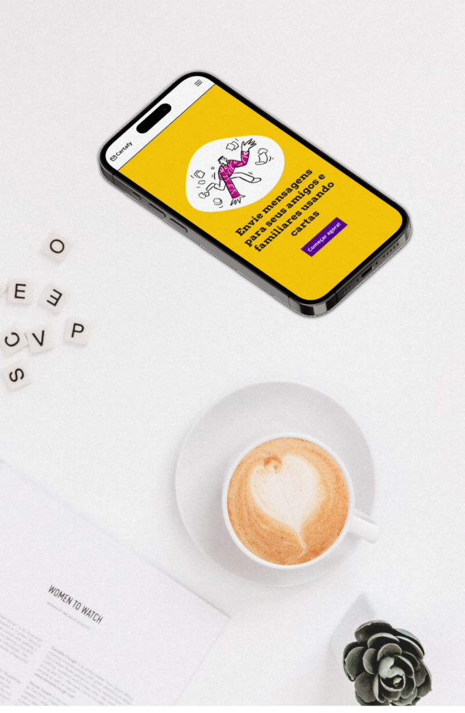
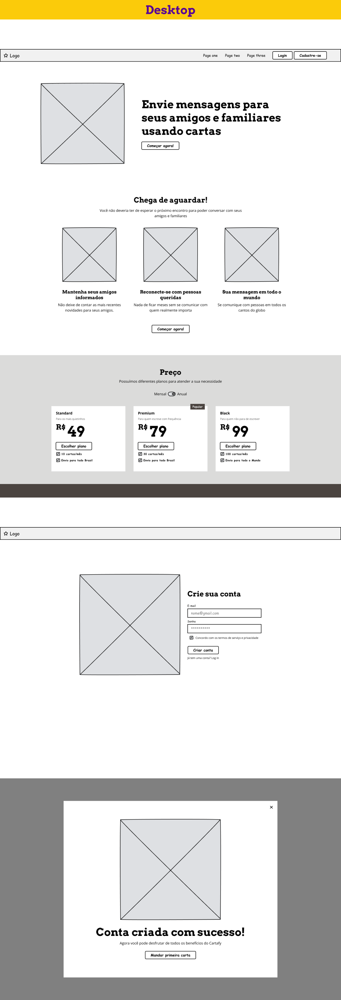
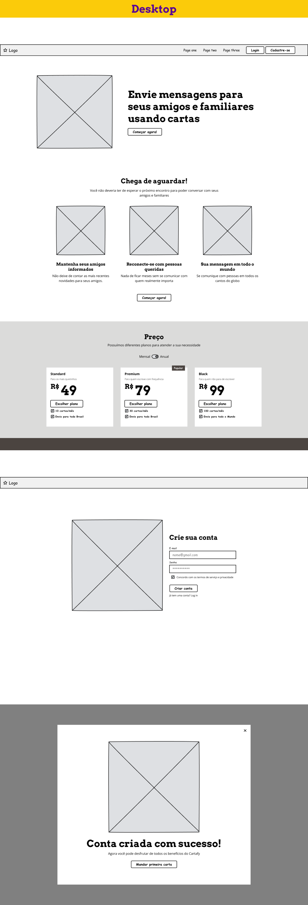
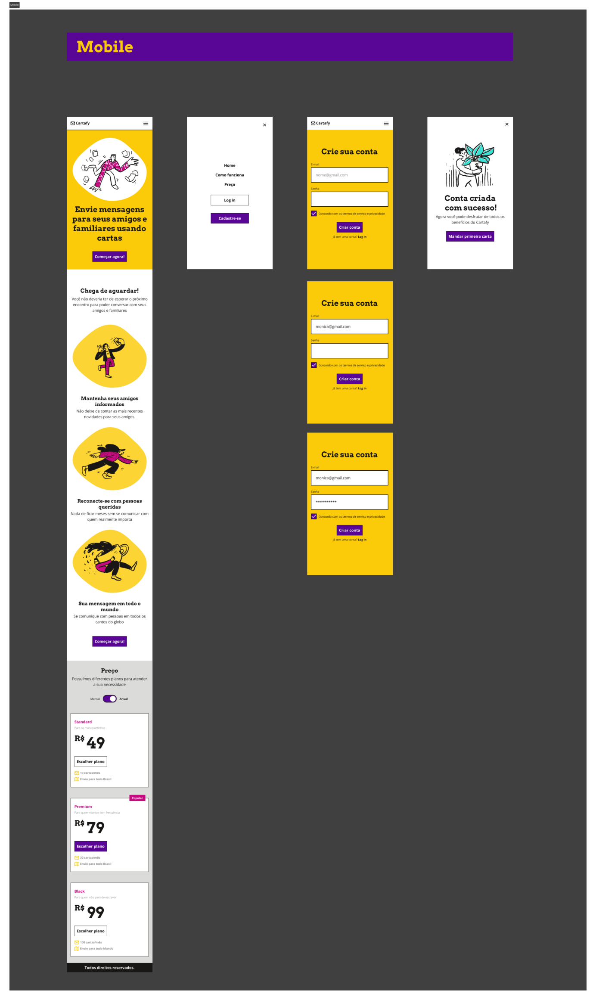
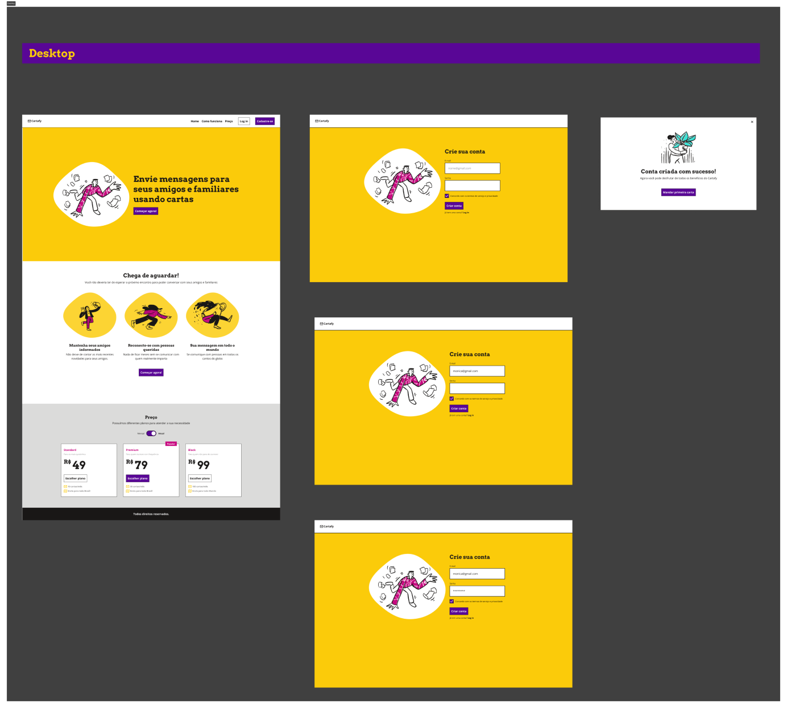
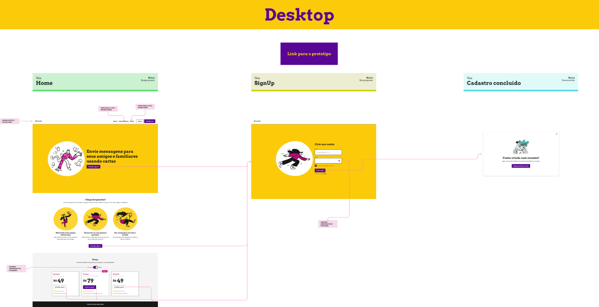
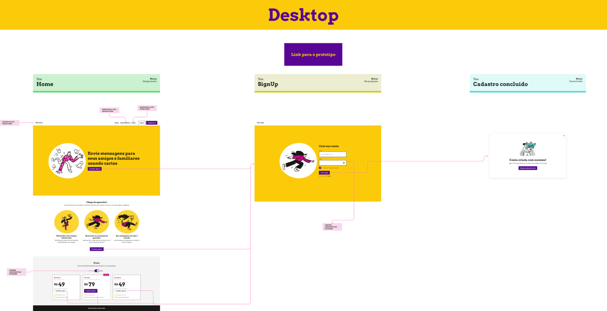

Cartafy
Contexto
Imagine um cenário utópico em que a invenção da carta acabou de acontecer e as pessoas ainda estão aprendendo o processo de enviar uma carta. Cartafy é a solução do momento para conectar as pessoas através da escrita.
Solução
A solução foi a criação de uma landing page responsiva (mobile e web) demonstrando o cadastro de uma nova conta.
Meu papel
Esse projeto foi desenvolvido individualmente e fui responsável por interpretar o Briefing disponibilizado pelo cliente e desenvolver o Styleguide, Interface e Protótipo.
Público-Alvo
Pessoas que querem se comunicar com amigos e familiares através de cartas. 60% dos nossos usuários navegam pelo computador.
Styleguide
Todo o Styleguide foi construído por mim baseado no Briefing disponibilizado pelo cliente.
Descrição
Cartafy é uma plataforma de envio de cartas onde você consegue se comunicar com seus amigos e familiares sem precisar ir aos Correios.
Wireframes
 

Telas
 Protótipos
Mobile
Desktop
Hand-off
 

Aprendizados
Com esse projeto puder adquirir mais fluência na ferramenta Figma principalmente na criação de componentes e suas propriedades.